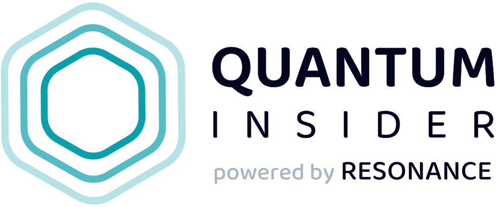
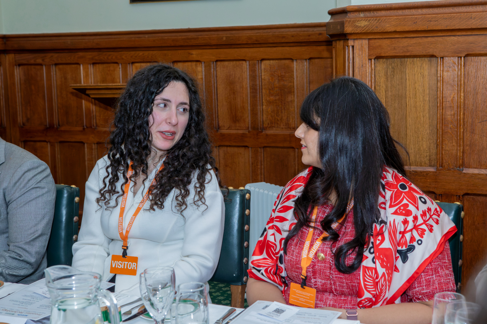
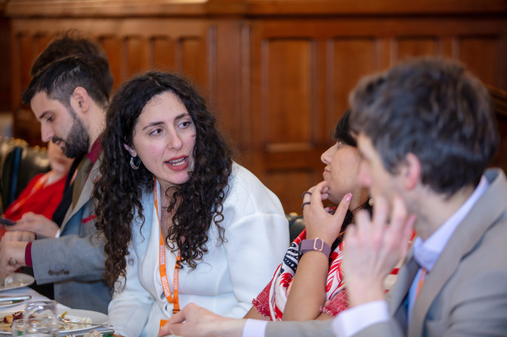

Social Interpreter
Caterina Puca
I speak both developer and manager — and I translate between them in real time, bringing friction to zero.
My work has been featured in

What is a Social Interpreter?
Most organisations lose time, money, and momentum in the gap between technical teams and leadership. A Social Interpreter lives in both worlds — fluent in algorithms and architecture, equally fluent in strategy and business outcomes. I don't just relay messages: I reconstruct meaning across mindsets, so decisions get made faster, priorities align, and nothing gets lost in translation.
My Value Proposition
Real-world examples of how I reduce friction across different environments
We need to refactor the auth service — it's a security liability and the tech debt is compounding.
Login is a compliance risk right now. If we fix it this sprint, we avoid a costly incident later.
The new quantum pipeline reduces circuit depth by 40% using ZX-calculus optimisations.
We cut processing time nearly in half — that's a competitive edge we can put in the pitch deck.
We can't ship this without integration tests — the surface area for regressions is too large.
Without this step, we risk a public failure at launch. A week now saves a month of firefighting.
Category-theoretic composition lets us build modular, provably correct abstractions.
We can reuse components across projects with guaranteed reliability — lower cost, faster delivery.
Our post-quantum cryptography implementation uses lattice-based key encapsulation — NIST-standardised, future-proof against quantum attacks.
This puts us ahead of incoming EU and US quantum-security mandates — a direct conversation starter with regulators and a policy differentiator.


Frontier Tech Dinner 2026 — House of Commons, London
How I Got Here
Use the arrows or swipe to navigate
Not your typical science kid
I never saw myself as a future scientist. For a while I even convinced myself I wanted to study chemistry. What fascinated me wasn't formulas — it was the hidden machinery of the world. Things like DNA quietly correcting its own errors while life keeps moving. That idea of invisible processes running in parallel stuck with me.
The axioms of the real numbers
Then, on my first day at university, something unexpected caught my eye.
I suddenly realised mathematics wasn't really about numbers at all — it was about structure. The rules themselves could be defined, reshaped, and explored. Numbers behaved the way they did because of the system behind them. I wasn't interested in calculating; I was fascinated by the architecture underneath.
Increasingly meta
That curiosity carried me into pure mathematics and toward increasingly "meta" questions — how ideas connect, organise, and scale. By the end of my master's — a little burnt out but still curious — I wanted to experience life as a researcher and see how far this structural lens could go.
The gap nobody talks about
Research taught me something important: what feels deeply relevant inside a niche is often invisible to the rest of the world. That's not a flaw — unique and peculiar interests are exactly what draw people into research. But in professional environments, this gap creates real friction. Many problems didn't come from technical difficulty itself, but from a detachment between what researchers see as important and what organisations actually need.
From structure in systems to structure between people
I became interested not only in structure within systems, but in structuring understanding between people — translating between technical and non-technical perspectives, and between innovation and the environments where it needs to land. That pulled me beyond academia into deep-tech, starting in the quantum sector and evolving into strategic and ecosystem roles.
Same motivation, different scale
I still follow the same instinct that first drew me to mathematics: finding the structure underneath complexity — and translating it into shared understanding, aligned stakeholders, and decisions that actually move things forward.
Talks, Media & Outreach
Hellenic Mathematical Society Conference 2025, Thessaloniki
Keynote Speaker
My Skillset
From quantum theory to boardroom strategy — tools I actively use on both sides
Education
M.Sc. Mathematics
Sapienza University of Rome, 2019–2021
Thesis on categorical models of meaning of natural language
110/110
B.Sc. Mathematics
University of Naples Federico II, 2016–2019
110/110 cum laude
Selected Publications
Making the quantum world accessible to young learners through Quantum Picturalism
arXiv preprint, 2023
Quantum Picturalism: Learning Quantum Theory in High School
IEEE QCE 2023, 2023
Obstructions to Compositionality
Proceedings ACT 2023, EPTCS 397, 2023
Fibrational linguistics (FibLang): Language acquisition
Proceedings ACT 2022, EPTCS 380, 2022